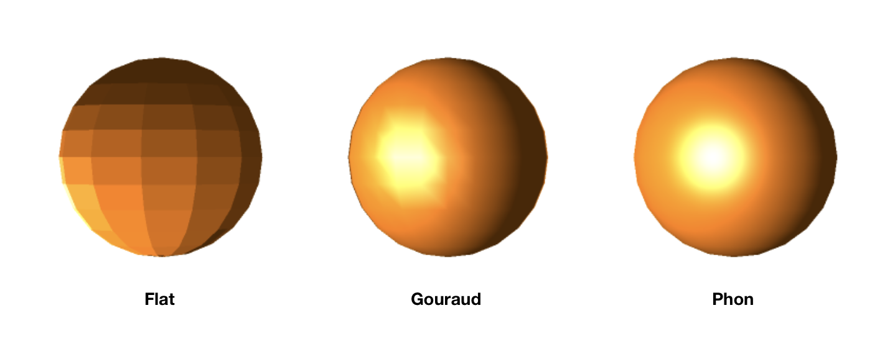

Shading Models: Flat, Gouraud, Phong, and Simple Illumination Models
We’re Team Tiger in Dave’s Fall 2017 Intro to Digital Arts and Sciences course, and we’ve been tasked with explaining the three different shading model types: flat shading, gouraud shading, and phong shading, and simple illumination models, such as: ambient lighting, diffuse reflection, and specular reflection. These shading and illumination models are used in computer graphics in order to attempt realistically simulating light and its behavior when interacting with a surface, in a way that can be computed for display as efficiently as possible. In order to understand how these models behave, different types of light sources, such as point lights, directional lights, and spotlights will be considered and explained as well.
